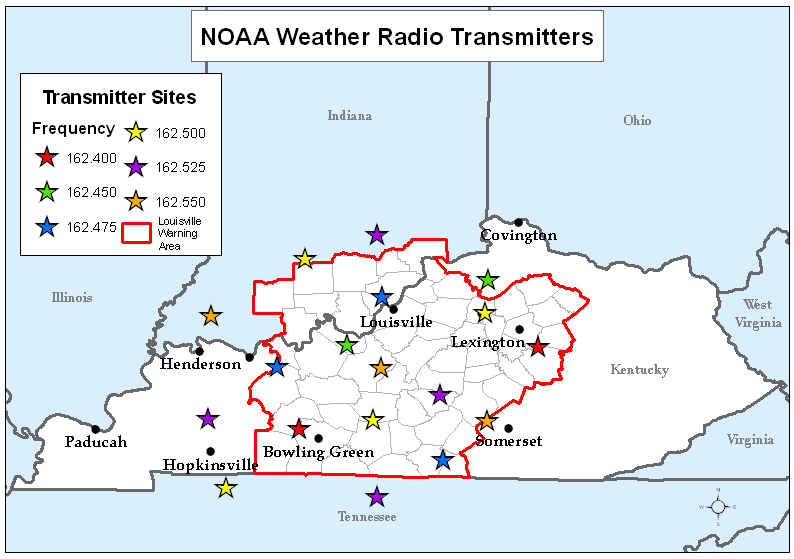

Heavy Rain and Thunderstorms in the Lower Ohio Valley and Southeast; Flooding Continues Along the East Coast of Florida
An approaching cold front may produce isolated heavy rainfall and severe weather today over portions of the Lower Ohio Valley and Southeast. While the heavy rainfall is ending across east Florida, significant river flooding is forecast along the St. John’s and the Peace rivers through the end of the week as flood waters will be slow to recede. Read More >
LOADING...

NOAA All-Hazards Weather RadioHave a question, concern, or a complaint about NOAA Weather Radio? Give us a call at (502) 969-8842 between 8:30am and 6pm ET Monday through Friday, or send us an e-mail! Thank you!Click on County to display County information |
|
 |
| Primary Transmitter Coverage: | Secondary Transmitter Coverage: | ||||||||||
|
Louisville |
|||||||||||
|
The Tuesday tone test is between 6pm and 7pm local time |
|||||||||||
|
NOAA Weather Radio is a service of the National Oceanic and Atmospheric Administration, broadcasting on seven VHF frequencies ranging from 162.400 MHz to 162.550 MHz. These frequencies are outside the normal AM or FM broadcast bands, and are therefore not found on the average home radio. There are numerous specially built receivers that are commercially available for receiving these broadcasts. Even deaf and hard-of-hearing people can benefit from having NOAA Weather Radio. |
 Weather Story
Weather Story Weather Map
Weather Map